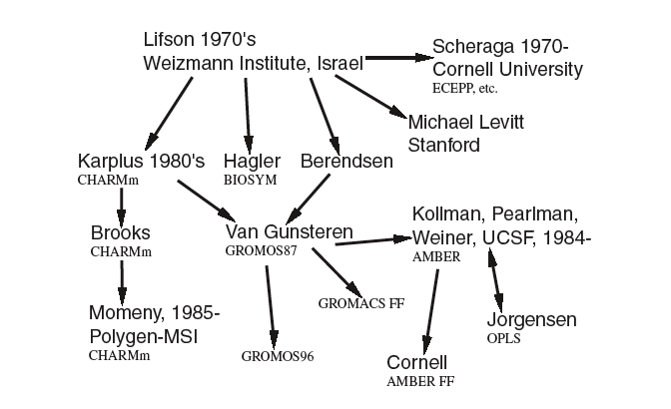

Force field schemes¶
Due to the classical nature of force fields, there are a variety of ways to derive potential parameters and use different functions to model the systems. Each research group tend to stick to certain fitting procedures and functions to establish the FF models, and hence, the birth of different FF schemes.
Diagram below shows a section of FF family tree how different schemes were born and evolved.
{kind=link}
A new scheme was usually formed by borrowing some of the characteristics from the previous schemes and sometimes this was so done to model new or different class of materials. This is the reason why sometimes two different FF schemes can share similar sets of potentials, and more often, the same functional forms.
However, the tree has been growing steadily since the 1970’s and has never stop. New branches are constantly added, and some even started from a completely new origin with different versions, to map new class of materials or to improve FF qualities to model the same class of materials.

FF types
An FF scheme is usually constructed with an aim to use it in a specific manner, which can perform better for certain materials than the others.
The FF qualities can generally be divided into two types:
Specific FF schemes. These are better suited to model certain specific types of materials. For instance, proteins, DNA, carbohydrates, molecular cages, ionic liquids, etc. It is usually fitted with many parameters and the accuracy is generally high for the right type of materials.
However, transferability to model other molecules may still be acceptable as these molecules or their derivatives were often formed part of the fitting criteria during the scheme constructions.
Generic FF schemes. These schemes can have fewer parameters applicable to a wide range of molecule types and can be used to model general class of molecules. For this reason, they have wide applicability although the accuracy may be poorer.
Note
Some of the modern FF schemes can be pretty sophisticated compare with their predecessors and the FF applicability can be straddled across both types. Some of these schemes can be used to model general small drug molecules quite accurately with the parameters fitted to tens of thousands of test molecules.
Example FF schemes
Below shows some of the popular FF schemes for biomolecules and organic molecules. Note that the list and their applicabilities are by no means exhaustive. It should be used as a rough guide only.
- CHARMM (Chemistry at HARvard using Molecular Mechanics) - biomolecules.
- AMBER (Assisted Model Building with Energy Refinement) - biomolecules.
- OPLS (Optimized Parameters for Large-scale Simulations) - general organic molecules in condensed phase.
- MMFF (Merck Molecular Foce Field) - small drug molecules.
- MM2, MM3, MM4 - Allinger et. al. - organic molecules.
- UFF (Universal Force Field) - general molecules, metallo molecules, most elements across the Periodic Table.
There are also other other variation of the above mentioned schemes. For example:
- AMBER Glycam - for carbohydrates
- CHARMM CGenFF, AMBER GAFF - for general molecules such as small drug molecules
- OPLS for ionic liquids.
- Etc.